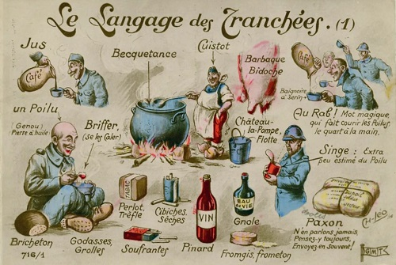
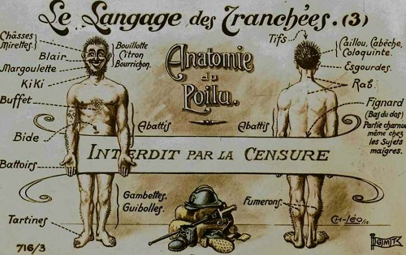
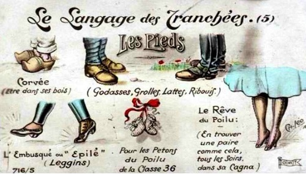

Argot
Très vite, les Poilus adoptent leur propre language, l’Argot des tranchées et on retrouve des traces de cet argot dans les cartes écrites par les trois frères. En voici, un bel exemple avec cette lettre d’un pantruchard (parisien) parue dans le journal des tranchées, le Rigolboche !
"Mes chers vieux,
Quand les Bobosses ont mis les voiles des tranchées avec tout leur bardin, on a pris le « Saurer » des Galeries Lafayette et sommes à c't'heure au repos. On se déhotte vers 6 plombes, on s'ouvre les châsses avec de l'eau pour les yeux et on avale le jus. Il n'y a pas à se magner pour se fringuer, car on se pagnotte avec ses grolles et son fendard et on n'a qu'à se coller son képroque.
Quand l'appel a été fait par le pied de banc (un mec que je ne peux pas blairer), les poilus qui se sont faits porter pâles vont voir le toubib ; les autres démurgent et vont bagoter à l'exercice pour se dégeler les fumerons. Quand on radine au patelin, on se tape le rapport ous qu'on nous donne les babillardes et les paxons, puis on se coltine les distribes, on touche de la barbaque gelée. Quelque-fois du pinard, mais le plus souvent, 1 on se l'accroche toujours nib de gnole. Puis on va becqueter; comme le cuistot fait de la becquetance maous pépère, on s’en fout plein la lampe.
Après avoir grillé une sibiche de perlot ou une bouffarde de gros cul, on en écrase sans s'en faire une miette, car on ne prend pas de pruneaux en poire ; il ne dégringole pas de marmites ou des gros noirs ou des crapouillots pour chambouler la cagnat.
Le soir quelques-uns vont à la corvée de cirage et les types qui sont rétamés où qui chèrent de trop près des fumelles pigent de la grosse. Comme je n'en pince pas pour la tôle, je fais une partie de brêmes. Vers 10 plombes on va au plume en attendant qu'un perco à la graisse d'oie nous dise que les Boches ont mis les bouts de bois.
J'espère que la Censure - Pour moi ne "sera pas trop dure - Ma prose en langage guerrier - Sans qu'elle puisse l'inquiéter - Vous fera voir, mes chers Parents - Comment se passe notre temps.
N\B - Les personnes qui ne saisiraient pas très bien le langage du front sont priées de venir faire un petit séjour aux tranchées, où elles auront toute facilité pour l'apprendre et le parler. "
Avec des soldats venant de tous les horizons et de toutes les classes sociales, les tranchées sont en effet un terrain fertile pour ce nouveau language. Ainsi, c’est un mélange d’argot parisien, d’argot militaire, d’expressions régionales, de mots d’outre-mer et quelquefois de mots inventés. Tout cela bien mijoté dans la marmite des tranchées avec un esprit de camaraderie, un soupçon de rébellion et une franche dose de camaraderie pour tromper la morosité ambiante.
Si vous avez des difficultés à comprendre la lettre du pantruchard, cliquez sur l’image et reportez vous au lexique de cet excellent ouvrage paru en 1915 (page 128 et suivantes).




